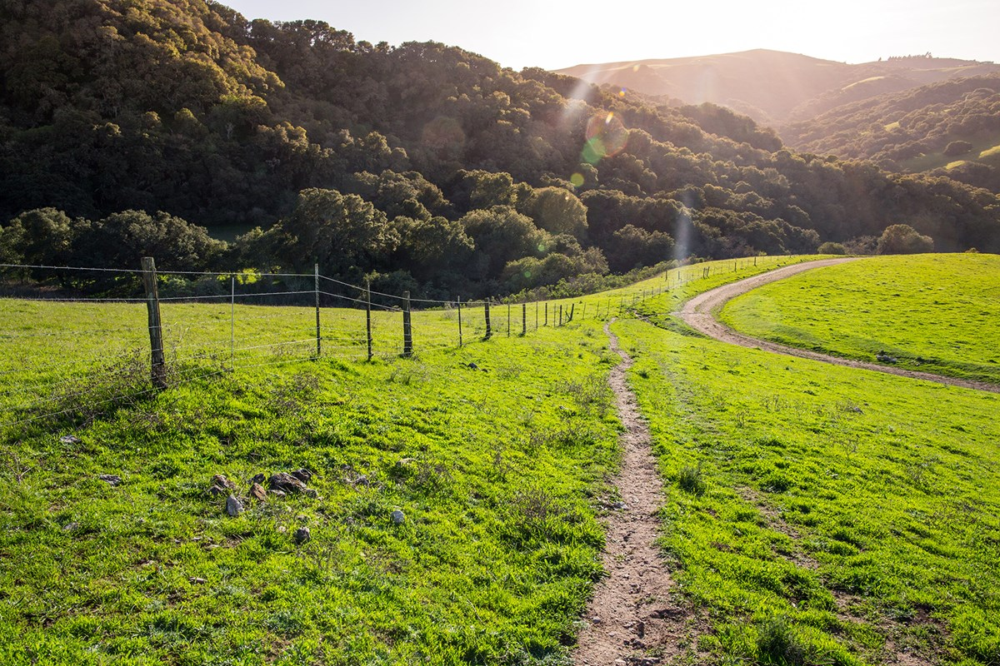
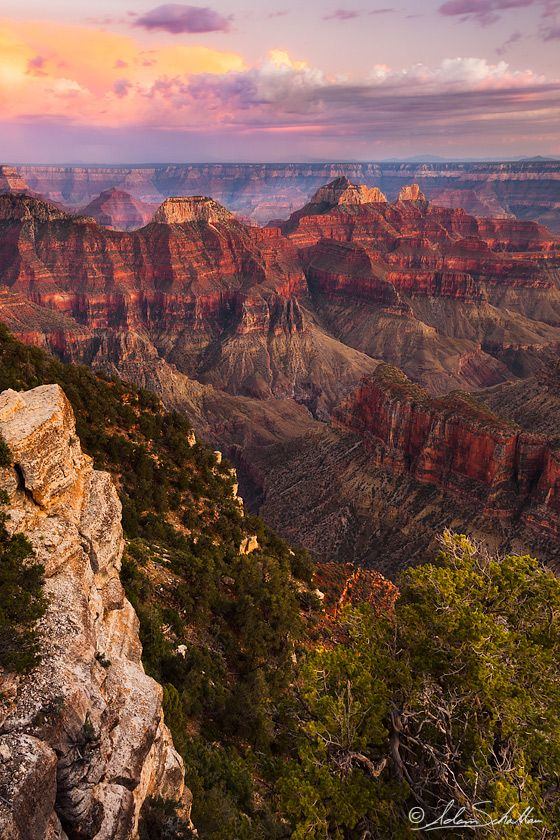

Throughout the United States, there are 60 National Parks. There is not in a national park in every state, but in few large states, there are more than one. For example, Alaska and California each have 8! These areas are protected to maintain the natural beauty of the land.
National Parks offer everything from beautiful hiking trails to picturesque views. They have options for everyone, whether you're just looking for a place to walk around to get some exercise, or even if you're looking for a thrill like cross country skiing! Many National Parks offer places to stay in or near the park.
The most popular National Park is the Grand Canyon. The Grandy Canyon is 1,218,375 acres and lies in Northwestern Arizona. The Grand Canyon offers plenty of activities from hiking, guided tours, biking, and even camping!
